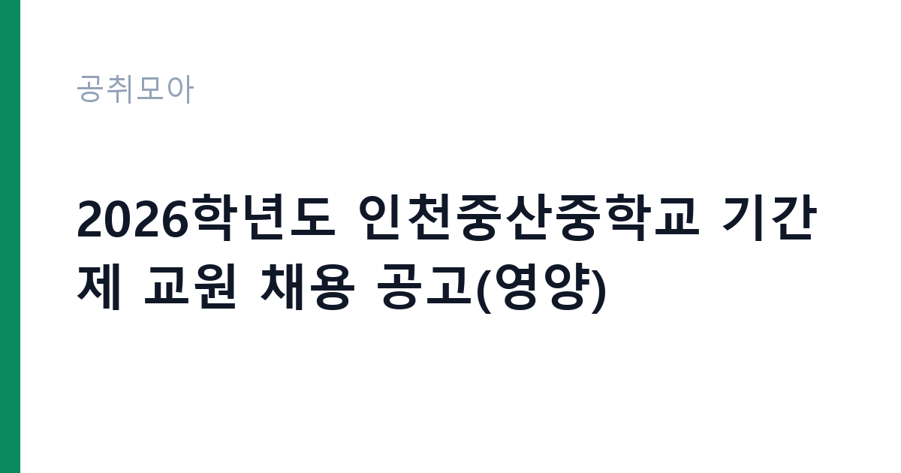

[교육청] 2026학년도 인천중산중학교 기간제 교원 채용 공고(영양)
인천광역시교육청 인천중산중학교 · 인천 · 마감 2026-09-09 (마감) · 출처 나라일터

한눈에 보는 모집 조건
| 기관 | 인천광역시교육청 인천중산중학교 |
|---|---|
| 공고명 | 2026학년도 인천중산중학교 기간제 교원 채용 공고(영양) |
| 고용형태 | 기간제교사 |
| 근무지 | 인천 |
| 게시일 | 2026-09-07 |
| 마감일 | 2026-09-09 (마감) |
지원자격, 이렇게 읽으세요
- 영양교사 자격증 필수
- 급식·식단 관리
- 서류→면접
공고문의 응시자격은 짧게 쓰여 있지만 실제로는 세 가지를 봅니다. 첫째 결격사유 해당 여부, 둘째 자격·경력의 직무 연관성, 셋째 근무 시작 가능일입니다. 셋 중 하나라도 애매하면 원문 공고문의 세부 조항을 먼저 확인하고 지원서를 쓰세요. 특히 인천광역시교육청 인천중산중학교 공고는 기간제교사 전형이라 서류에서 직무 연관 키워드(교육청)를 명시하는 게 유리합니다.
이 공고의 포인트
이 공고의 관전 포인트는 '교육청'입니다. 인천광역시교육청 인천중산중학교이 내건 조건 가운데 '영양교사 자격증 필수' 대목이 서류의 분수령이 됩니다. 해당되면 주저 없이 지원하고, 애매하면 원문 공고문의 세부 조항을 먼저 대조해 보세요. 마감 일정상 오늘 내로 판단하는 게 좋습니다.
전형은 어떻게 진행되나
일반적인 순서는 서류심사 통과 후 면접심사입니다. 서류에서는 직무와 연결되는 경험이 있는지, 면접에서는 그 경험을 직접 설명할 수 있는지를 봅니다. 마감일(2026-09-09) 코앞에 몰리면 원서 접수 자체가 안 될 수 있으니 최소 하루 전에 제출하세요. 제출 뒤에는 접수번호·수험표가 정상 발급됐는지 확인이 필수입니다.
이런 분께 추천해요
- 인천 근무가 가능한 분 — 통근·거주 조건이 맞는지가 1순위입니다
- 기간제교사 전형을 찾는 분 — 교육청 분야 관심자라면 우선 검토 대상입니다
- 마감(2026-09-09) 안에 서류를 낼 수 있는 분 — 마감이니 오늘 지원서 초안부터 잡으세요
지원 전 체크리스트
- 인천광역시교육청 인천중산중학교 원문 공고문 저장했는가(공고 변경 대비)
- 지원서 초안과 증빙 파일이 준비됐는가
- 접수 마감일 2026-09-09(마감)을 달력에 표시했는가
- 인천 출퇴근·거주 조건이 맞는가
모집 일정과 제출 타이밍
게시일은 2026-09-07, 마감은 2026-09-09입니다. 이미 마감된 공고입니다. 다음 회차를 노리세요. 공공 채용은 마감일 24시간 전부터 지원자가 몰려 접수 페이지가 느려지거나 증빙 업로드가 실패하는 일이 잦습니다. 일정 운영의 정석은 이렇습니다. 첫날에는 공고문과 직무기술서를 출력해 응시자격·우대사항에 형광펜을 치고, 중간 기간에는 자기소개서 초안과 증빙 스캔을 끝내고, 마감 전날에는 접수 시스템에 미리 입력까지 마쳐 두는 것입니다. 마감 당일에 처음 접속하는 지원자가 가장 많이 탈락합니다. 접수번호가 발급되고 수험표(또는 접수확인서)가 출력돼야 접수가 끝난 것이니, 제출 후 확인증까지 꼭 챙기세요.
직무 이해하기: 교육청
학교·교육청 채용의 실무는 학사 지원, 급식·돌봄 보조, 행정실무가 중심입니다. 교원자격증이나 관련 자격증 소지 여부가 서류의 핵심 변수이므로 자격 취득일과 자격번호를 정확히 기재하세요. 방학 중 근무 조건이 평소와 다른 경우가 많아 원문의 근무조건란을 별도로 확인해야 합니다. 인천광역시교육청 인천중산중학교의 이번 채용(기간제교사)도 같은 잣대로 보면 됩니다. 공고 제목에 적힌 분야명과 직무기술서의 필요역량을 나란히 놓고, 본인 경험에서 겹치는 키워드를 세 개 이상 뽑아보세요. 그 세 개가 자기소개서와 면접 답변의 뼈대가 됩니다.
자기소개서 작성 팁
자기소개서에서 평가자가 찾는 건 직무와의 연결고리입니다. 서두에 지원 분야(교육청)를 택한 이유를 한 문장으로 밝히고, 이어서 수치로 증명되는 경험 두 가지를 구체적으로 서술하세요. 마무리는 입사 후 1년의 실행 계획으로 닫습니다. 인천광역시교육청 인천중산중학교 지원자가 자주 놓치는 감점 포인트는 분야와 동떨어진 성장 배경 나열, 근거 없는 역량 주장, 마감일(2026-09-09) 착오입니다. 기간제교사 모집은 빠른 실무 적응이 관건이라 출근 가능 시점을 분명히 적는 것이 플러스가 됩니다.
면접 준비 포인트
면접관의 질문은 두 갈래입니다. 서류 내용의 사실 관계 확인, 그리고 우리 조직에 맞을지에 대한 판단입니다. 자소서의 핵심 경험 두 개를 1분 안에 설명하는 연습을 해두고, 인천광역시교육청 인천중산중학교의 대표 사업 하나를 지원 분야(교육청)와 엮은 답변을 준비해 가세요. 마무리 질문에서는 근무지(인천)와 기간제교사 근무가 가능하다는 뜻을 간결하게 전하는 게 좋습니다. 단정한 복장, 30분 전 도착, 결론 우선 답변이 기본 수칙입니다.
급여·근무조건 읽는 법
공고문의 보수 표기는 호봉·수당·상여를 합친 기준이 아니라 기본급 기준인 경우가 많습니다. 실제 수령액은 원문의 보수·복무 조항과 동일 기관 재직자 채용 후기를 함께 봐야 가늠이 됩니다. 기간제교사 공고라면 계약 기간, 연장·전환 조건, 4대 보험과 퇴직금 적용 여부를 원문에서 반드시 확인하세요. 근무지(인천)가 도서·산간이거나 교대 근무가 포함된 경우에는 주거 지원·통근버스 조항도 체크리스트에 넣으세요.
자주 묻는 질문
- 경쟁률은 어느 정도로 예상되나요?
인기 기관·인천 근무 공고는 서류 경쟁률이 10대 1을 넘는 일이 흔합니다. 다만 '교육청' 같은 조건부 전형은 실질 경쟁률이 낮아지는 경우가 많으니, 본인 조건에 맞는 공고를 고르는 것 자체가 전략입니다. - 합격자 발표는 어디서 확인하나요?
인천광역시교육청 인천중산중학교 홈페이지 채용 게시판과 지원 시 등록한 문자·이메일로 안내됩니다. 발표일에는 접속이 폭주하니 접수번호를 미리 메모해 두세요. 예비합격자 운영 여부도 원문에서 함께 확인하는 것이 좋습니다. - 불합격하면 다음 기회는 언제인가요?
공공기관은 상·하반기 정기 채용과 수시·추가 모집이 반복됩니다. 이번 마감일(2026-09-09)을 놓쳐도 같은 기관의 다음 회차가 열리니, 공취모아의 교육청 탭을 구독하듯 수시로 확인하세요.
함께 보면 좋은 공고
[교육청] 2026학년도 가락초등학교 통학차량안전도우미 채용 공고 — 마감 2026-09-22[교육청] 성덕고등학교 2026학년도 시설관리 교육공무직원 채용 공고 — 마감 2026-09-23[교육청] 2026학년도 2학기 계약제교원(특수 기간제교원) 채용 공고 — 마감 2026-09-28출처: 나라일터 공개정보를 바탕으로 공취모아가 정리한 안내글입니다. 모집 조건·일정은 변경될 수 있으니 지원 전 반드시 원문 공고문을 확인하세요. 본 글은 정보 제공용이며 합격을 보장하지 않습니다.